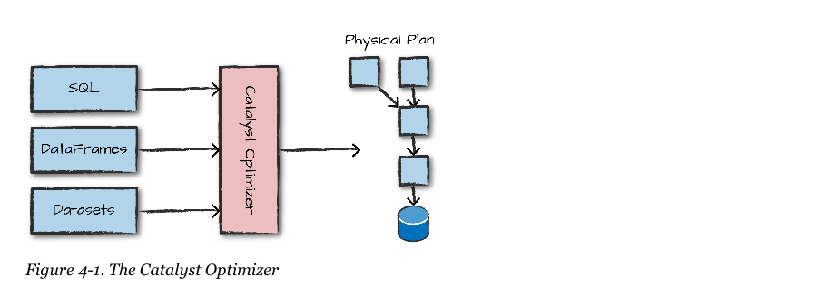
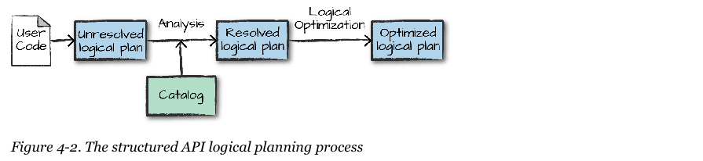
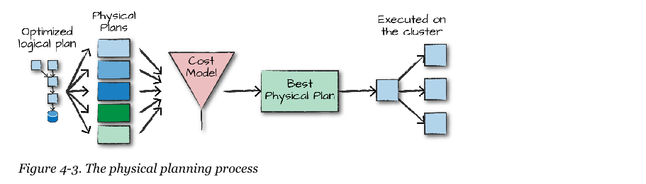

Spark the Definitive Guide 2nd Edition
Chapter 04
Structured API Overview
Structured API Overview
Objectives and Outcomes
- Introduced to Spark’s Structured APIs, Datasets, DataFrames, and SQL Views
- Learn how Spark transforms into a physical execution plan on a cluster
Review
So far:
- We learned about Spark’s programming model
- We learned how to run production code
- We were introduced to type-safe data structures in Spark
- We were introduced to Structured Streaming on Spark
- We were introduced to Machine Learning on Spark
- We were introduced to 3rd party Spark packages
API Overview 66
- Three datatypes in Spark:
- DataFrames
- Can you define this term?
- Datasets
- Can you define this term?
- SQL Tables and Views
- Can you define these terms?
- With these data types we can manipulate disparate types of data
- Unstructured log files
- Semi-structured CSV files
- Structured Parquet files
Structured API concepts
- These concepts refer to both batch and streaming
- Code should easily switch between the two
- We will cover Streaming later in the course, Chapter 20
Structured Collections
- Spark has two notions of structured collections:
- Each are distributed table-like collections with well defined rows and columns
- Each row must have the same number of columns
- Both are immutable
- Both allow for lazily evaluated plans that are only deployed when an action is called
Schemas
- A schema defines the column names and data types of the column
- Schemas can be defined manually or inferred
- Schema on Read
- All of Spark actions take place in the internal Spark language called Catalyst
- We don’t write in this language but the JVM allows us to write in higher level languages that convert to Catalyst
DataFrames vs Datasets
- DataFrames have types of a sort…
- These are maintained by Spark internally
- Schema only checked at runtime
- Datasets are typed DataFrames
- Only available in Scala and Java
- Enforce type at compile time
- P. 54
Overview of Structured Spark Types
- Spark is effectively a programming language of its own
- Uses the Catalyst engine internally to maintain type information
- This code does not do math in Scala, but Catalyst:
scala val df = spark.range(500).toDF("number") df.select(df.col("number") + 10)
DataFrames vs. Datasets
- DataFrame schema checked at runtime
- Dataset schema checked at compile time
- Datasets only available in Java and Scala
- Why?
- DataFrames are Datasets of type
Row
- Type
Row is Spark’s internal optimized in-memory format for computation P.54
- Even without Datasets in Python and R, we are still always working on an optimized in-memory datatype
Columns and Rows
- Columns represent a 3 types of data:
- A simple type like an integer or string
- A complex type like an array or map
- A null value :!
- A row is nothing more than a record of data
- Each record in a DataFrame must be of type
Row
- Rows can be created in numerous ways:
- Via SQL statements
- DataSources (ingesting)
- dynamically and in memory
spark.range(2).toDF().collect()
Spark Types
- You can import the types library you want to work with in Scala
import org.apache.spark.sql.types._val b = ByteType
- You can import the types library you want to work with in Java
import org.apache.spark.sql.types.DataTypes;ByteType x = DataTypes.ByteType;
- You can import the types library you want to work with in Python
from pyspark.sql.types import \*b = ByteType()
- Page 56 has an entire table of all the data type libraries available
Overview of Structured API Execution
- Structured API execution happens in 4 steps on Page 58:
- Write your DataFrame/Dataset/SQL code
- If valid code, Spark converts this to a Logical Plan
- Spark transforms this Logical Plan to a Physical Plan, checking for optimizations along the way
- Spark then executes this Physical Plan on the cluster
- 
Logical and Physical Planning
 
Logical Planning
- The first phase takes the user code and converts it into a logical plan
- Purely to convert the code into the most optimized version
- Spark has an unresolved logical plan
- Your code may compile, but what if the table name or column name is wrong?
- Spark uses a catalog - an internal repo of all table and DataFrame information
- Then resolves column and tables in the analyzer
- The analyzer might reject an unresolved logical plan, otherwise pass it to the Catalyst Optimizer
- A collection of rules that attempts to optimize the logical plan by pushing predicates or selections down
Physical Planning
- After an optimized plan is generated.
- Spark begins to specify how this plan will be executed on the cluster
- Creates multiple strategies and compares them via a cost model
- At execution time, Java bytecode is generated and the final result returned to the user
Conclusion
- We were introduced to Spark’s Structured APIs, Datasets, DataFrames, and SQL Views
- We learned how Spark transforms a logical plan into a physical execution plan on a cluster
Questions
- Any questions?
- Read Chapter 05 and do any exercises in the book.